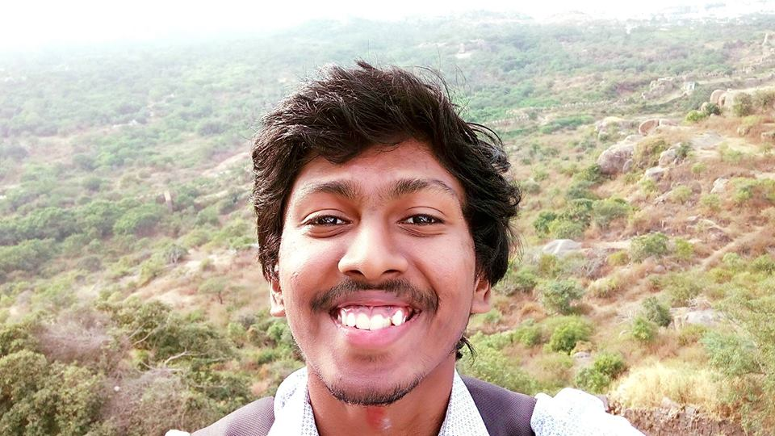

Chalavadi Vishnu

Master of Technology (Research Assistant)
Department of Computer Science and Engineering
Indian Institute of Technology Hyderabad
Kandi - 502285, India.
email :
chalavadivishnu[at] gmail.com
Education:
- PhD in Computer Science & Engineering, IIT Madras, 2007.
- M.Tech in Systems Analysis & Computer Applications, NITK Suratkal, 2000.
Research Interests
- Artificial Intelligence
- Deep Learning
- Computer Vision
Research Group
Conferences
- C. Vishnu, Dinesh Singh, C. Krishna Mohan and Ch. Sobhan Babu,
Detection of Motorcyclists without Helmet in Videos using Convolutional Neural Network,
accepted in International Joint Conference on Neural Network
(IJCNN 2017),
Anchorage, Alaska, USA, May 14–19, 2017.
- Dinesh Singh, C. Vishnu, and C. Krishna Mohan,
Visual Big Data Analytics for Traffic Monitoring in Smart City,
in Proc. IEEE International Conference on Machine Learning and Applications
(ICMLA 2016),
Anaheim, California, USA, pp. 886-891, Dec. 18-20, 2016.